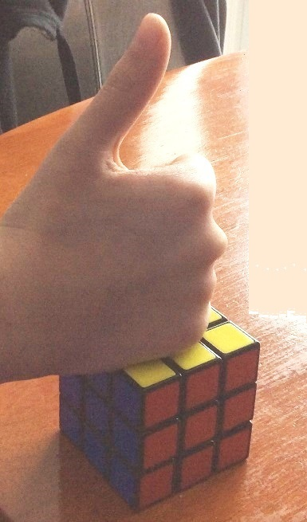
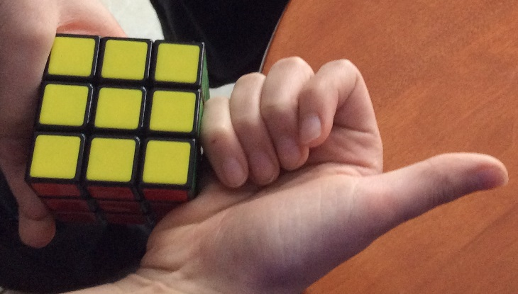

Each Rubik's Cube consists of 26 small cubies (why not 27=3x3x3?) These small cubies can be divided into three groups
(1) 6 centers: For each center piece, we see only one side, the other five sides are hidden.
(2) 12 edges: For each edge piece, we see only two sides, the other four sides are hidden.
(3) 8 corners: For each corner, we see only three sides, the other three sides are hidden.
It does not matter what you do, the centers will always be centers, the edges will always be edges, and the corners will always be corners.
Each cube has six sides. They are:
L: left side;
R: right side;
D: down side;
U: upper side;
F: front side;
B: back side;
There are two directions: clockwise and counter clockwise. For example, R denotes clockwise, R' denotes counterclockwise.
There are also three hidden layers:
M – Middle layer – between left and right.
E – Equatorial layer – between down and up.
S – Standing layer – between front and back.
Other than these sides/layers, there are also axes: x, y, z.
All the movements are demonstrated on the left.
Sometimes we will move two layers together, which will be deonted by a lowercase letter. And if we see a number 2 following a letter, that means we do the same movement twice. For example R2 is equal to RR and R2' or R'2, is equal to R'R'.


Make a "thumb-up" with your right hand, put it on any side of the cube, thumb away from that side, the direction of the other four fingers is counter-clockwise. For example, the two images on the left shows U' and R'
Make a "thumb-up" with your left hand, put it on any side of the cube, thumb away from that side, the direction of the other four fingers is clockwise.
The Rubik's Cube is a 3-D combination puzzle invented in 1974 by Hungarian sculptor and professor of architecture Erno Rubik , originally called the Magic Cube. Do you know in how many ways we could arrange the cube?
43,252,003,027,486,856,000
That's approximately 43 quintillion.
It's fun!
It improves your hands' flexibility.
It keeps your brain healthy.
It helps you make good friends.
It is also an official sport. There are a lot of competitions around the world.
And again, it is fun!
2014 RUBIK'S CUBE US NATIONAL CHAMPIONSHIPS
BSD Open 2016 Official Competition Rubik's Cube
This website is the beginning of your Rubik's cube journey. Let's begin!
The animations in the website are adpated from
Jason Graves.